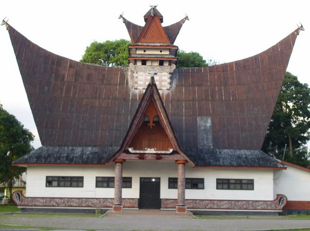

Rumah adat Pakpak, yang dikenal dengan nama Rumah Pakpak, merupakan salah satu contoh kekayaan arsitektur tradisional dari suku Pakpak di Sumatera Utara. Rumah ini memiliki desain yang khas dengan atap yang tinggi dan berbentuk seperti perahu terbalik. Struktur atap yang melengkung ini tidak hanya memberikan tampilan yang unik tetapi juga berfungsi untuk menahan curah hujan yang tinggi di daerah tersebut.
|  | |
Rumah Pakpak biasanya dibangun dengan bahan-bahan alami seperti kayu dan bambu. Dinding rumah terbuat dari papan kayu yang dipasang secara vertikal, sementara bagian atap sering menggunakan daun kelapa atau ijuk. Desain rumah ini menunjukkan adaptasi terhadap lingkungan sekitar, dengan struktur yang kokoh dan ventilasi yang baik untuk mengatasi suhu tropis dan kelembapan tinggi.
Di dalam rumah Pakpak, terdapat beberapa ruangan dengan fungsi yang berbeda. Biasanya, ruang utama digunakan untuk kegiatan sehari-hari dan berkumpul, sementara ruang khusus mungkin digunakan untuk penyimpanan barang berharga atau pertemuan keluarga. Interior rumah sering dihiasi dengan ukiran dan dekorasi tradisional yang menambah keindahan dan kekayaan budaya rumah tersebut.
Secara historis, Rumah Pakpak mencerminkan sistem sosial dan budaya masyarakat Pakpak. Rumah ini sering kali menjadi pusat kehidupan komunitas dan tempat diadakannya berbagai upacara adat. Struktur rumah ini juga mencerminkan status sosial pemiliknya, dengan variasi dalam ukuran dan dekorasi yang menunjukkan tingkat kekayaan dan pengaruh dalam masyarakat.
Rumah Pakpak memiliki sejumlah ciri khas yang membedakannya dari rumah adat suku lainnya di Sumatera Utara. Salah satu ciri utama adalah bentuk atapnya yang tinggi dan melengkung, menyerupai perahu terbalik. Atap ini dirancang sedemikian rupa untuk mengatasi curah hujan yang tinggi dan suhu tropis di daerah tersebut. Bentuk melengkung pada atap juga memberikan kesan yang estetis dan menjadi simbol kekuatan serta keharmonisan dengan lingkungan.
Struktur utama rumah Pakpak terbuat dari kayu yang kuat dan bambu. Dinding rumah biasanya menggunakan papan kayu yang disusun secara vertikal, memberikan kekuatan tambahan dan ventilasi yang baik. Pada bagian bawah rumah, sering kali terdapat ruang terbuka atau tiang-tiang tinggi yang memungkinkan aliran udara, menjaga suhu di dalam rumah tetap sejuk dan menghindari kelembapan dari tanah.
Di bagian interior, rumah Pakpak sering dibagi menjadi beberapa ruangan dengan fungsi tertentu. Ruang utama biasanya digunakan untuk kegiatan sehari-hari dan berkumpul, sedangkan ruangan lain mungkin digunakan untuk penyimpanan atau sebagai ruang tidur. Dekorasi interior sering menampilkan ukiran dan ornamen tradisional yang mencerminkan seni dan budaya suku Pakpak.
Ciri khas lain dari rumah Pakpak adalah penggunaan bahan-bahan alami seperti daun kelapa atau ijuk untuk atapnya, yang menunjukkan adaptasi terhadap kondisi lokal. Selain itu, rumah ini seringkali dikelilingi oleh halaman yang luas dan dapat digunakan untuk kegiatan komunitas, upacara adat, atau sebagai tempat bermain bagi anak-anak.